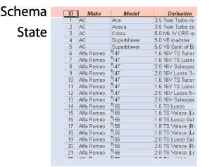
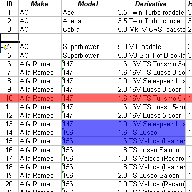
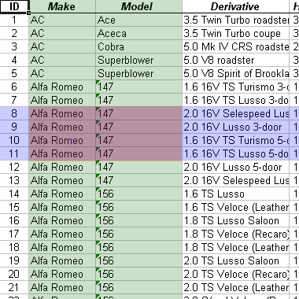
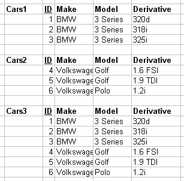
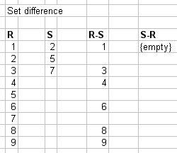
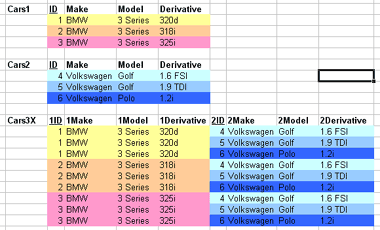

1.2. Data models
A data model is a model that describes in an abstract way how data are represented in a business organization, an information system or a database management system - Wikipedia
[Section notes PDF 310Kb].
1.2.01. Introduction
- Relational model
- Abstract operations on relations
- Set theoretic operations
- Relational-specific operations
- Basic algebra operations
- Union, Intersection, Difference
- Cross product
1.2.02. Relational model
- Table as relation
- Row as tuple
- real world entity or relationship
- fact
- Column as attribute
- Domain

The concept of a relation is abstract, therefore we have a number of different ways of visualising it.
1.2.03. Relation
- Relation schema R(A1, A2, A3.. An)
- Design side
- Assertion/declaration
- Relation state
- Data side
- set of n-tuples
- each one an ordered list of values
- 1NF: each value is atomic, no composite/multivalue

1.2.04. Abstract operations
- Database lifecycle
- design, populate, evolve
- Insert
- tuple (a1,a2,a3…an)
- Delete
- tuple (a1,a2,a3…an)
- Update (or modify)
- tuple (a1,a2,a3…an)
- attribute to change, new value

All the operations described in the next few sections are abstract. We're going to see how valuable they can be in processing real world data later.
1.2.05. Basic algebra
- Two categories
- Set theoretic operations
- Union, Intersection etc.
- Relational specific
- Select, project and join
At this stage we're talking about set theoretical operators on the Relational model, not SQL instructions which confusingly have identical names and only similar behaviour.
1.2.06. Select operation
- SELECT a subset of tuples from a relation
- Uses selection condition
- Evaluate each tuple to true of false
- False tuples discarded
- Sigma (s)
- output = s(cond)(input_relation)
- Relation schema: R(output) = R(input_relation)
- Commutative
1.2.07. Project operation
- PROJECT a subset of attributes for all tuples from a relation
- Pi (p)
- p<attribute list>(R)
- If sublist is only non-key attributes
- might get duplicates
- Removes duplicates
- Attribute list:sublist example
The result set of the operation is itself a relational. That output relation will contain the same number of rows as the input, however it may contain a different number of columns; fewer if a subset of attributes is projected; more if derived or aggregated attributes are included.
1.2.07. Sequences of operations
- Select followed by projection
- Area clipping: rows then columns
- p<attr list>
(s(select_cond)(R)) - Rename operation (r)
- Renames attributes list2 from list1
- r(new_attr_names)(R)

1.2.08. Rename operation
- Attribute renaming only
- Cannot alter domain, or add/remove attr
- Rename operation (r)
- Renames attributes list2 from list1
- r(new_attr_names)(R)
- Implicit renaming
- Order dictated by relational schema
1.2.08. Set Theoretic
- Binary operation: two relations
- Sets of tuples
- Union compatibility (same attributes)
- Union (R u S)
- Intersection (R n S)
- Commutative (R u (S u T) = (R u S) u T)

1.2.08b. Set difference
- Set difference
- Non-commutative (R-S != S-R)

1.2.09. Cross product
- Cartesian product of two relations
- R x S
- Also known as
- Cross product
- Cross join
- Cross product diagram
- Introduction to complexity
- Computationally explosive

1.2.10. Relational algebra/model notation
- Relational schema R(A1, A2,…,An)
- Relation state r or r(R)
- Set of unordered tuples
- r = {t1, t2,…,tn}
- Each n-tuple is an ordered list of values
- t = <v1, v2,…,vn>
- ith value in t = vi called t[Ai]
- r(R) subset of (dom(A1) x dom(A2)... x dom(An))
1.2.11. Constraints
- Domain constraint
- For all v in t of r(R)
vi is an element of dom(Ai) - Entity constraint
- K = SKmin
- t[K] != null
- Key constraint
- Superkey SK as identifying subset of attributes
- t1[SK] != t2[SK]
1.2.12. Referential integrity
- Given two relations R1 and R2
- R1 contains a foreign key (FK) that references
- A primary key (PK) in R2
- R1 referencing relation, R2 referenced relation
- Shared domains: dom(FK) = dom(PK)
- Foreign exists: t1 in r(R1), t2 in r(R2)
- t1[FK] = t2[PK] || NULL